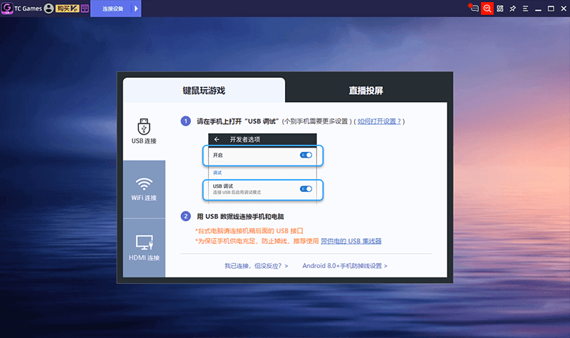
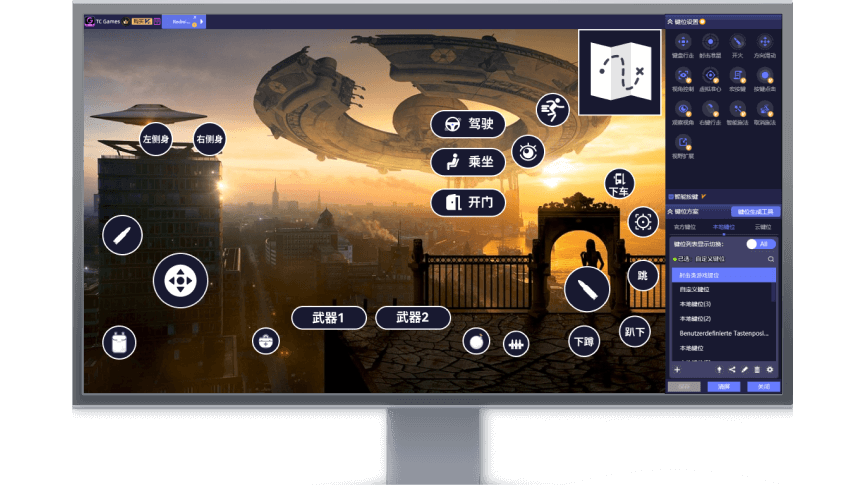

TC Games 新手入门：把手机搬上电脑，零基础五分钟上手
第一次接触 TC Games？不知道它跟模拟器啥区别？这篇从装软件到第一次投屏跑通，手把手带你走一遍，再告诉你三个新手最该先玩的功能。
这篇能带你从完全不懂到用起来——不需要你有任何安卓模拟器或投屏经验，跟着点就行。
它到底是干嘛的
想象一下：你手机上玩着一款游戏，但触屏操作总觉得不够精确，视野也小。要是能把手机画面直接搬到电脑大屏上，用鼠标点、用键盘敲，是不是爽多了？TC Games 就是干这个的——它不在电脑里跑一个虚拟安卓系统（那叫模拟器），而是把你手里这台真实手机的画面抓过来投到电脑上，同时把你在电脑上的键鼠操作转发回手机。
为什么非要投屏真机而不是直接用模拟器？一句话：模拟器跑的是虚拟的安卓环境，有些游戏或 App 一检测到"我在模拟器里"就不让登录、不让组队；而 TC Games 投的是你手上那台真手机，服务器看到的就是一台手机，不会有这种门槛。另外电脑端负载也低得多，低配集显电脑也能流畅用。

五分钟上手：从下载到第一次跑通
整个过程就是三步——电脑装客户端、手机装个小助手、把两边连起来。别慌，每一步都有提示。
第一步：电脑上装 TC Games。 去TC Games官网下载安装包，双击一路下一步就行，Windows 和 macOS 都支持。装完打开，你会看到主界面上有三个大按钮：USB 连接、WiFi 连接、HDMI 连接。第一次用推荐 USB 方式，最稳。
第二步：手机上装 TC Agent。 手机端是个很小的后台助手，用来配合电脑抓画面和转发操作。打开 TC Games 电脑端，它会自动告诉你怎么装——有的手机扫码就能下，有的需要手动允许安装未知来源应用（这步在手机系统设置里开一下就行，装完再关上也安全）。
第三步：把两边连起来。 用数据线把手机插电脑上，手机下拉通知栏把 USB 模式切成「文件传输（MTP）」，然后点电脑端的「USB 连接」。等个几秒钟，TC Games 会自动识别你的手机，弹出一个小窗口让你授权投屏——手机上点确认就完事了。
连成功的那一刻，你会看到电脑屏幕上出现手机的实时画面，可以用鼠标点图标、用键盘打字了。这就是投屏成功。

上手后先玩这三个功能
第一次投屏成功别急着开游戏，先花两分钟调这三个东西，体验会好很多。
1. 分辨率——画面清晰还是流畅，你说了算
TC Games 的设置面板里有个投屏分辨率选项，从 480P 到 1080P 都能选。调完立即生效，画面会闪一下再恢复。
你会发现：分辨率越高画面越清晰，但同时带宽消耗也越大。如果你用 WiFi 投屏，1080P 可能偶尔卡一下，降到 720P 就稳了。怎么选？记住一条实用原则——FPS 射击类游戏（比如和平精英）建议 720P 以上，不然看不清远处的人；卡牌和文字类游戏 480P 也够用。 开启「智能适配」的话，软件会根据你电脑的性能和网络质量自动帮你调。
免费版最高只能到 480P，如果想上 720P 或 1080P，需要 VIP 版。但 480P 用来体验和日常操作已经没问题了。
2. 键位映射——让手机游戏变成电脑操作
这是 TC Games 最核心的功能。手机上原本用手指点的地方，你可以把鼠标左键、键盘 WASD 这些按键"贴"到对应的屏幕位置上，以后用电脑操作就像玩 PC 游戏一样。
打开键位编辑界面，它会自动识别你当前投屏的是什么游戏（绝大多数热门游戏都内置了默认键位方案）。如果你觉得默认方案不顺手，点一下屏幕上的某个按钮，再敲一下键盘上你想绑定的键就行——比如把手游里的"开火"按钮绑定到鼠标左键，把"移动摇杆"绑定到 WASD。
编辑完点保存就行。下次再打开这个游戏，键位自动加载，不用重新配。更复杂的键位组合技巧可以去TC Games文档里翻翻。
3. 换连接方式——USB、WiFi、HDMI 三种随便选
除了 USB 最稳，TC Games 还支持 WiFi 和 HDMI 两种方式。WiFi 适合不想插线的场景——电脑和手机连同一个 WiFi，电脑端点 WiFi 连接，手机上也开一下手机端的 WiFi 投屏开关，配对成功就能用。HDMI 方式需要一根 USB-C 转 HDMI 的转接器，把手机直接输出到大屏显示器，适合需要超高画质低延迟的场景。
新手从 USB 开始就好。等你用熟了，想摆脱线材再切 WiFi。

小白的三个常见疑问
连接老断怎么办
这是新手最常遇到的问题。先别慌，TC Games 大多数情况会自动重连。如果反复断，优先排查这几件事：
数据线是不是不行？ 很多便宜的数据线用久了接触不良，换一根质量好的品牌线（比如绿联、Anker）试试。另外插电脑的主板后置 USB 口，前面板口经常接触不好。
电脑 USB 省电在搞鬼？ Windows 默认会在闲置时自动关掉 USB 设备省电。打开「设备管理器 → 通用串行总线控制器 → USB 根集线器 → 属性 → 电源管理」，把「允许计算机关闭此设备以节约电源」取消勾选就行。所有 USB 集线器都设一遍。
WiFi 信号被干扰了？ 如果用 WiFi 投屏，周围邻居的 2.4G WiFi 信号容易互相干扰。去路由器后台切到 5G WiFi，或者手动选一个干净的信道。
免费版和 VIP 版到底差在哪
最核心的差异是最高分辨率——免费版上限 480P，VIP 版可以到 1080P。另外 VIP 版还有键位云存储功能，多台电脑之间可以一键同步你配好的按键方案，不用每台都重新调。除此之外没有其他硬性限制，键位映射、三种连接方式这些核心功能免费版都能用。
对于刚上手的新手来说，免费版完全够用来体验和日常使用。等你确定喜欢、想用更高画质再升级也不迟。
会不会被当成模拟器玩家
不会。这是 TC Games 和模拟器最大的区别——模拟器是在电脑里虚拟一个安卓环境，游戏服务器能检测到；而 TC Games 投的是真实手机，服务器看到的就是一台手机，不会被标记为模拟器玩家，可以和手机端的朋友正常组队匹配。这一点对于有组队需求的玩家来说特别重要。
下一步怎么走
恭喜你，现在已经能把手机搬上电脑、用键鼠操作了。进阶可以研究一下键位云存储——如果你有多台电脑，在一台上配好键位方案，传到云端，换另一台电脑登录同一个账号就能一键加载，省得每次重新调。或者试试用 WiFi 投屏搭配 USB 连电脑的组合，摆脱线材束缚的同时保持稳定。慢慢来，TC Games 的潜力远不止投个屏这么简单。这份中文文档资料我同时放到了三个仓库里——GitHub、Gitee 和 GitCode，国内访问哪个顺畅就看你当时的网络情况。